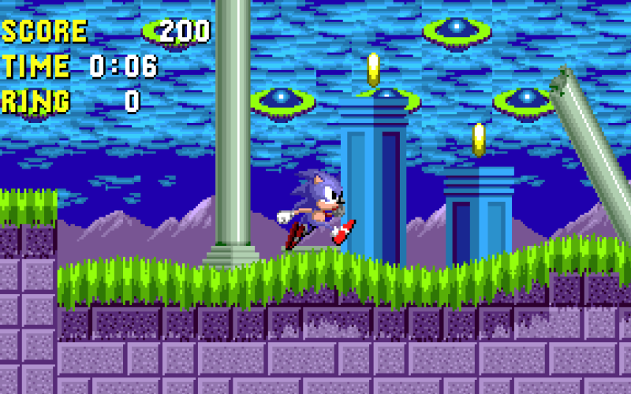
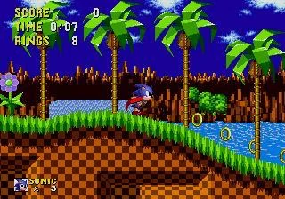

Sonic The Hedgehog
 
Sonic the Hedgehog (ソニック・ザ・ヘッジホッグ Sonikku za Hejjihoggu?) es un videojuego de plataforma desarrollado por Sonic Team y publicado por Sega para la consola de videojuegos doméstica Sega Genesis. El primer juego de la franquicia Sonic the Hedgehog y el debut del personaje del mismo nombre, se lanzó en Norteamérica en junio de 1991 y en las regiones PAL y Japón el mes siguiente. El juego presenta a Sonic the Hedgehog, que puede correr a velocidades supersónicas, y emprende una búsqueda para derrotar al Dr. Robotnik, un científico que ha encerrado animales en robots y busca las poderosas Chaos Emeralds. El modo de juego implica recolectar anillos como una forma de salud y un esquema de control simple, con saltos y ataques controlados por un solo botón.
COMPRAR